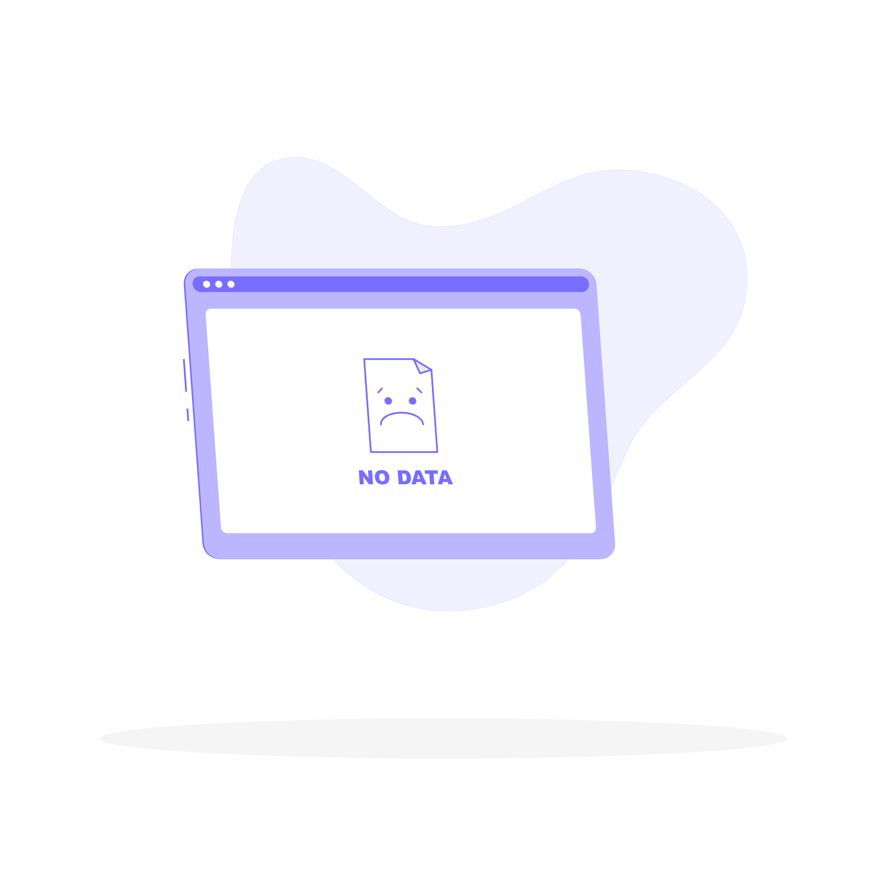

<ion-header class="ion-no-border header" [translucent]="true">
  <ion-toolbar class="toolbar">
    <ion-title class="titulo">Histórico de Lecturas </ion-title>
  </ion-toolbar>
  
</ion-header>  

<ion-content [fullscreen]="true">
  <ion-item>
    <ion-label>Fecha inicio</ion-label>
    <ion-input
      value="{{ filter.fecha_desde | date: 'dd/MM/yyyy' }}"
      id="fechaInicio"
      class="ion-text-end"
    ></ion-input>
    <ion-popover trigger="fechaInicio" size="cover">
      <ng-template>
        <ion-datetime
          presentation="fechaInicio"
          [(ngModel)]="filter.fecha_desde"
          locale="es-ES"
        ></ion-datetime>
      </ng-template>
    </ion-popover>
  </ion-item>
  <ion-item>
    <ion-label>Fecha fin</ion-label>
    <ion-input
      value="{{ filter.fecha_hasta | date: 'dd/MM/yyyy' }}"
      id="fechaFin"
      class="ion-text-end"
    ></ion-input>
    <ion-popover trigger="fechaFin" size="cover">
      <ng-template>
        <ion-datetime
          presentation="fechaFin"
          [(ngModel)]="filter.fecha_hasta"
          locale="es-ES"
        ></ion-datetime>
      </ng-template>
    </ion-popover>
  </ion-item>
  <ion-item>
    <ion-label>Seleccione un medidor</ion-label>
    <ion-select [(ngModel)]="selectedOption">
      <ion-select-option *ngFor="let option of options" [value]="option.id_medidor">{{option.nombre}}</ion-select-option>
    </ion-select>
  </ion-item>  
  <ion-item (click)="getReportesFI()">
    <ion-label>Aplicar filtros</ion-label>
    <ion-icon size="small" slot="end" name="search"></ion-icon>
  </ion-item>

  <ion-spinner color="primary" class="page-loader" *ngIf="loading" name="crescent"></ion-spinner>
  <div *ngIf="!loading">
    <div *ngIf="reportes.length===0">
      
    </div>
    <ion-card *ngFor="let r of reportes, let i = index">  
      <div>
        <ion-card-header>
          <ion-toolbar>
            <ion-card-title>
              <div class="title">
                <div>
                  {{ (r.fecha_lectura | date: 'MM/dd/yyyy') }}
                  <ion-icon color="success" name="calendar-outline"></ion-icon>
                </div>
                <div>
                  {{ getSelectedMedidorName() }}
                  <ion-icon color="danger" name="time-outline"></ion-icon>
                </div>
              </div>
            </ion-card-title>
            <ion-card-content class="contenido">
              Lectura: {{ r.lectura }}
              <!-- <ion-icon color="danger" name="map-outline"></ion-icon> -->
            </ion-card-content>              
            <!-- <ion-buttons slot="end">
              <ion-button (click)="onIconClick(r)"> 
                <ion-icon color="primary" size="large" name="chevron-forward-outline"></ion-icon>
              </ion-button>
            </ion-buttons> -->
          </ion-toolbar>
        </ion-card-header>
      </div>      
    </ion-card>

  </div>
</ion-content>
